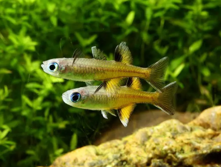

Systématique
- Ordre : Atheriniformes
- Famille : Pseudomugilidae
- Genre : Pseudomugil
- Espèce : P. signifer
- Auteur : Kner, 1866

Pseudomugil signifer, communément appelé "Yeux-bleus du Pacifique", est un petit poisson d'eau douce et saumâtre originaire de l'est de l'Australie. C'est l'espèce type du genre Pseudomugil. Il présente un corps svelte, translucide à reflets argentés ou dorés selon les populations. Ses yeux arborent une couleur bleu brillant caractéristique de la famille.
Le mâle atteint environ 5 à 6 cm, tandis que la femelle reste plus petite, autour de 3,5 à 4 cm. Les mâles se distinguent par des nageoires dorsales et anales très développées, souvent ornées de motifs noirs, blancs ou jaunes, qu'ils déploient lors des parades nuptiales. On note une grande variabilité morphologique entre les populations du nord (plus grandes) et celles du sud de son aire de répartition.
C'est un poisson grégaire, vif et pacifique, qui doit impérativement être maintenu en banc (minimum 8 à 10 individus). Pseudomugil signifer occupe principalement la partie supérieure et médiane de l'aquarium. Les mâles passent une grande partie de la journée à parader entre eux, nageoires déployées, pour établir une hiérarchie sans agressivité réelle.
En aquarium, il apprécie un espace de nage libre important combiné à une végétation périphérique dense (mousses, plantes à feuilles fines) servant de support de ponte. C'est une espèce euryhaline, capable de s'adapter à une large gamme de salinité, bien qu'en aquariophilie elle soit majoritairement maintenue en eau douce ou légèrement saumâtre.
Mode : Ovipare, diffuseur d'œufs adhésifs.
La reproduction est relativement aisée. Le mâle courtise la femelle en nageant à ses côtés avec des mouvements saccadés, nageoires dressées. La femelle dépose quelques œufs chaque jour, généralement dans des mousses de Java ou sur des mops, pendant plusieurs jours. Les œufs sont munis de petits filaments adhésifs.
L'éclosion a lieu après 10 à 15 jours selon la température. Les parents ne prennent aucun soin des œufs et peuvent les dévorer s'ils ne sont pas retirés ou si le bac n'est pas extrêmement planté. Les alevins sont très petits et nagent directement sous la surface ; ils doivent être nourris avec des infusoires ou du plancton liquide, puis des nauplies d'artémias.
Dimorphisme sexuel : Très marqué. Le mâle est plus grand, possède des nageoires impaires beaucoup plus longues et colorées. La femelle est plus petite, plus terne, avec des nageoires courtes et transparentes.
Espérance de vie : 2 à 3 ans. Comme beaucoup de petits athériniformes, c'est une espèce à cycle de vie court.
Pseudomugil signifer dispose d'une vaste distribution le long de la côte est de l'Australie, du cap York au sud de la Nouvelle-Galles du Sud. Il fréquente des milieux très variés : ruisseaux de forêt pluviale, rivières claires, estuaires saumâtres et même des mangroves.
Il se trouve souvent dans des zones à courant faible, près des berges riches en racines et en végétation surplombante. Le substrat peut varier du sable aux débris organiques. Cette adaptabilité explique pourquoi il tolère des paramètres physico-chimiques assez larges en captivité.
Répartition

Origine naturelle :
- Australie : Côte Est (Queensland et Nouvelle-Galles du Sud).
- Localité type : Sydney, Australie.
Statut UICN : Préoccupation mineure (LC). C'est l'un des Pseudomugil les plus communs en Australie, bien que certaines populations locales soient menacées par l'urbanisation des côtes.
Paramètres de maintenance
Température : 18 à 28 °C (évitez les extrêmes constants).
pH : 6,5 à 8,0 (très tolérant).
GH : 5 à 20 °dGH.
Courant : Modéré.
Volume conseillé : Minimum 60-80 L pour un banc d'une dizaine d'individus.
Régime alimentaire
Régime : Omnivore à tendance carnivore (micro-prédateur).
Dans la nature, il se nourrit de petits invertébrés aquatiques, de larves d'insectes et de pollen à la surface.
En aquarium, il accepte volontiers les nourritures sèches de petite taille (paillettes, micro-granulés), mais des distributions régulières de vivant ou congelé (nauplies d'artémias, cyclops, daphnies) sont essentielles pour sa vigueur et ses couleurs.